-
I started out with two 15" chunks of aluminum extrusion I got off of Ebay. I found each injector location and centered all three on the blank rails. Using a .375 for the thru hole I drilled thru using a slow speed and a good amount of lube. These aren't quiet as important to have a perfect finish but the next surface is crucial. I'm using 14mm top feed injectors. After a couple self fits using different drills I decided on using a 17/32 (.531). Using a high quality drill and slow speed and feed I achieved an awesome finish. I deburred the port ~.015 as to not slice the oring. The injectors fit perfect. Next was milling them to length.
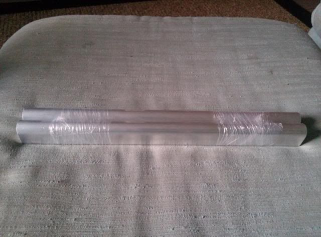
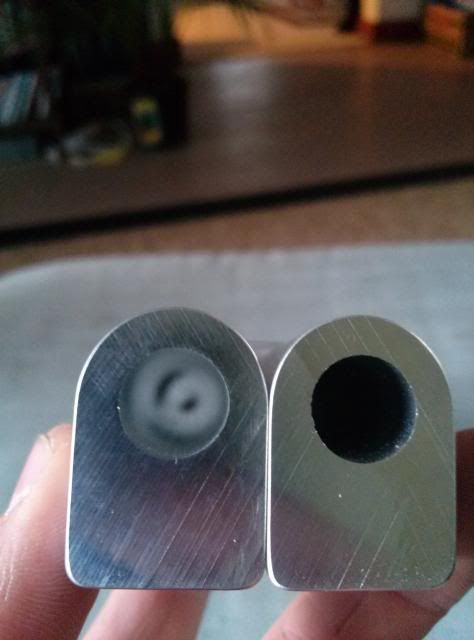
This is pretty straight forward if you have a mill at your disposal. I started out measuring with a tape measure where I thought I had to be with each rail and its overall length. The only real interference you will have is the passenger side rail contacting the water fill neck. To remove the bulk of the material (~1.5") I used a cut off wheel. Afterwards I threw it in the vise and ran an endmill across the end, test fitting the rail onto the lower intake to test for fitment. It didn't take long to get it to the finished length. The final step was to drill and tap for my fittings.
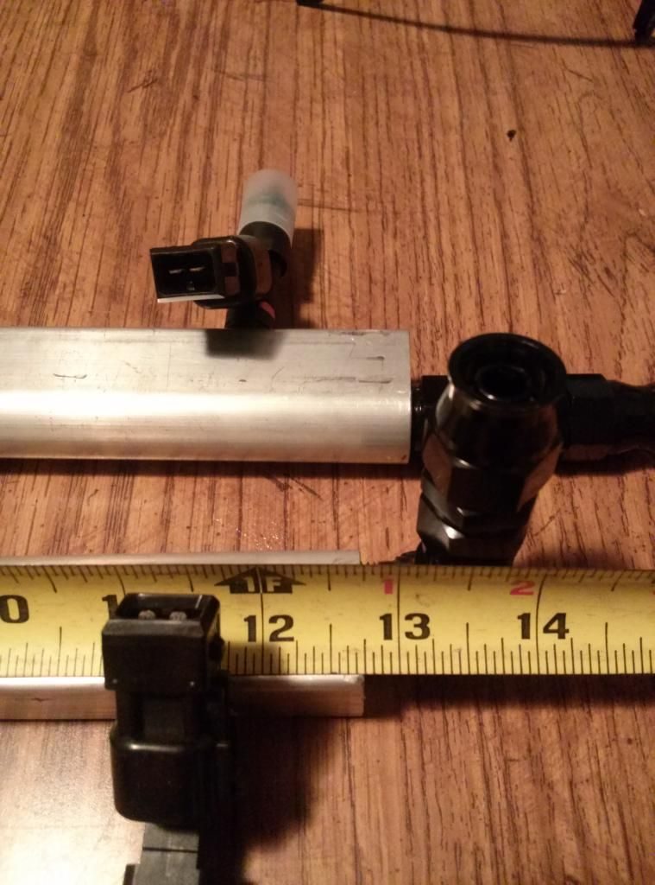
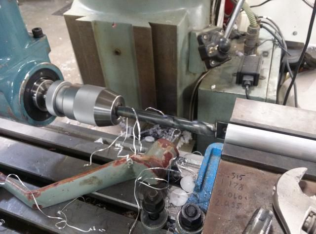
The goal for my car is 400whp so -6 fittings were my choice in fittings. It is possible to tap AN threads, but to be honest, I didn't trust myself creating a leak-free thread on something that could burn my car down. Next best option was to adapt to -6. I did this by using a 3/8NPT-6 adapter. All 4 ends received 3/8NPT Tap and adapters. http://www.siliconeintakes.com/ Supplied all the fittings for this system and they have been great. Super affordable and a one stop shop for everything auto-plumbing related. I'm also ordering all my couplers and intercooler piping from them as well.
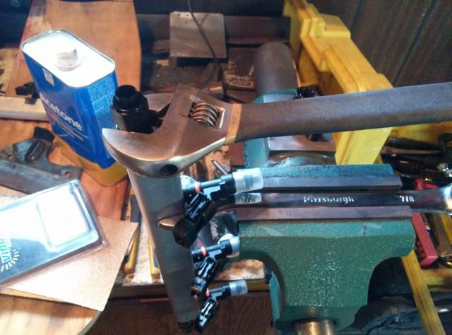
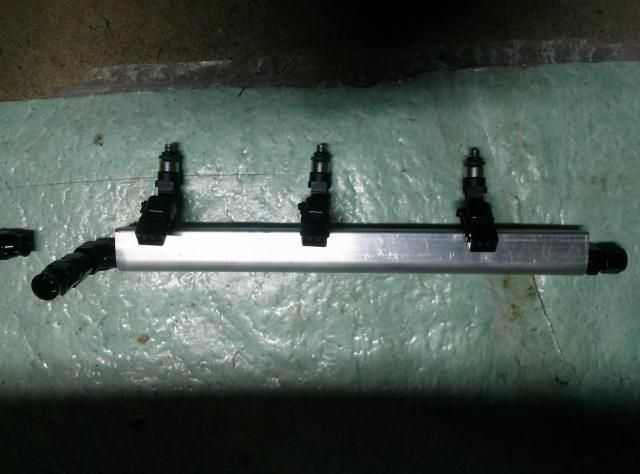
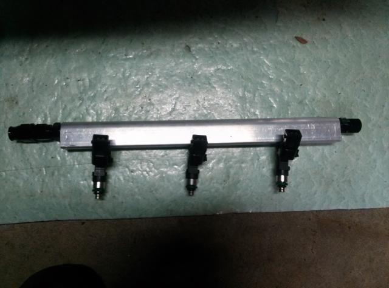
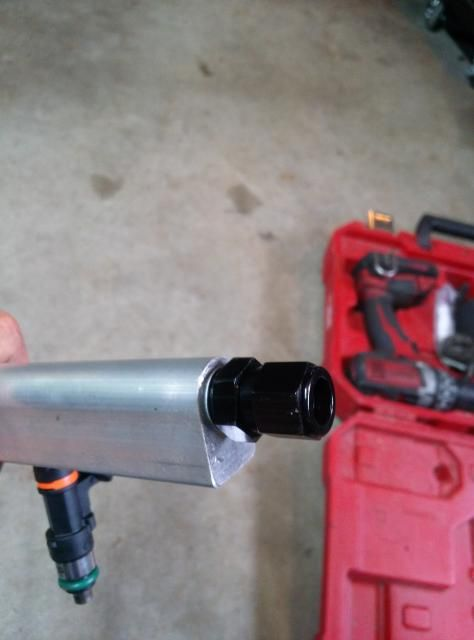
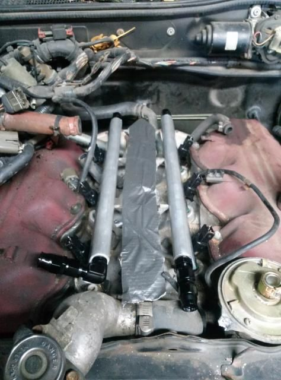
These rails are nearly complete now. A couple things left to do and they will be ready to bolt down. One is bending the 3/8 aluminum line that connects the two rails in the rear utilizing -6 tube nuts. Nothing is special about the 3/8 tube I'm using, it's aluminum and it cost 50 cents a foot. Next is making mounts to bolt them to the LIM and making clearance for the rails, in the last picture above, you can see the rail contacting part of the casting on the LIM. Finally I'll have to throw the LIM in the vises, tilt the head and drill out the injectors bores to there new sizes. Much to do, little time to do it.
I have left out the specs for the injector spacing simply because it's somewhat of a "trade secret" to those who have made them and sell them for business. Go out and buy a dial caliper and getting building
UPDATE:
After figuring the angle of the injectors, relative to the vice I'm putting it in, I made a simple fixture to hold the LIM so the ports are perpendicular and ready for drilling.
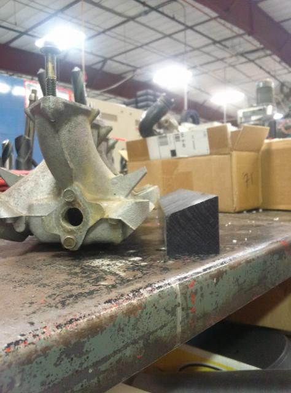
Using a center finding indicator, I located off the first port, set x & y
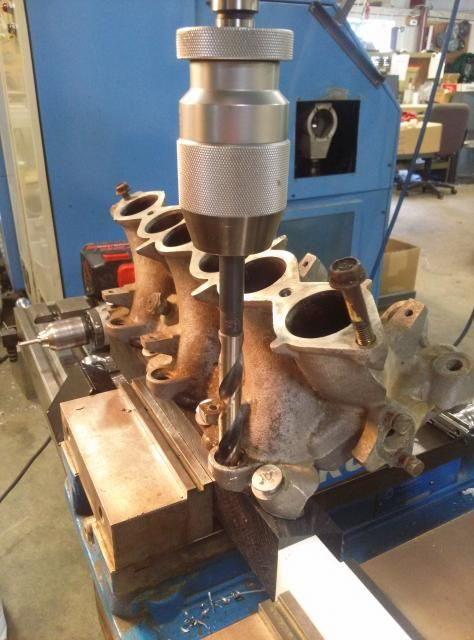
I already know the spacing to each hole so it was quick work after it was set up. Each side is symmetrical, making it really easy to unbolt, spin, bolt again and go. First drill was for the injector oring.
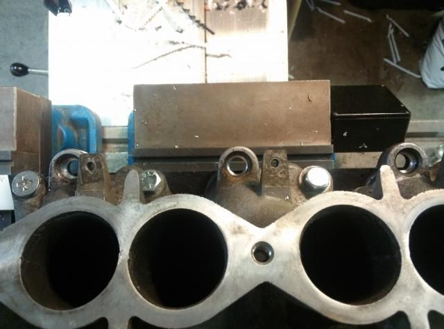
There was a slight lip before the injector bore. I took care of that with another drill and chamfered it a bit. I'll get a picture of this.
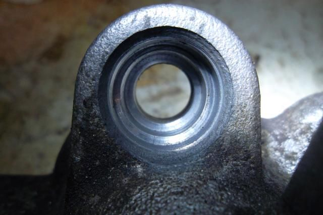
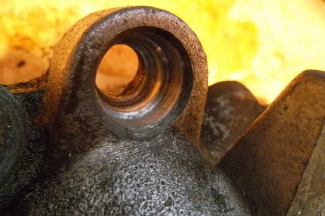
After everything was drilled I noticed that the rails actual sat low enough to not hit the casting on the manifold. One step closer to getting the fuel system buttoned up. All that's left is mounting. I ran out of time at work but they will just be bent aluminum, very similar to Pallnets.
UPDATE
Finished the final step today. The mounts are super simple but they took some time to make them right. To get the rails to seat tight the holes had to be offset just the slightest bit so when they get wrenched down they squeeze the rails down and seal better. I used .125 x 1 aluminum bar. They are mounted on a spare LIM right now. Have to get it sandblasted and painted up. Rails will probably be smoothed out but I don't plan to polish them to a mirror finish, maybe even paint them. The rest I will leave for pictures1985 300zx N/A - June 4 2012 Sold to Austin Irwin
1987 2+0 N/A - March 19 2014
1987 2+0 Turbo - May 6 2014 -
nice work! sounds like what I'm doing with 3000GT rails, except for the extensive fab work. Im cutting them down and threading for 3/8 NPT to adapt to -6AN. if you wanted to cut in for -6AN, just do it for an O ring seal. drill threads, then have the step in the entrance for the O ring. be careful with the NPT-AN adapters if they're aluminum. I got some from Summit, and one of them wound up galling and dropping a couple threads. looks like it was a manufacture error.
also, FYI, SI fittings with the ferrule are not standardized AN fitting sizes, as far as if you want to use AN wrenches for them. At worst, use Summit brand. If you're ok with using regular wrenches, and the ferrule style, the SI fittings do their job pretty well, esp for the cost!Damn dirty angels....these cars!
Current Daily Driver - 86 Turbo.
Under the cover - THE BANANA… that needs to be re-energized.
sigpic -
Finished rails all bolted up
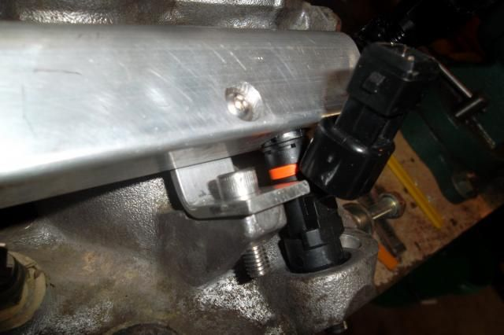
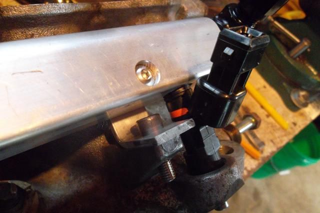
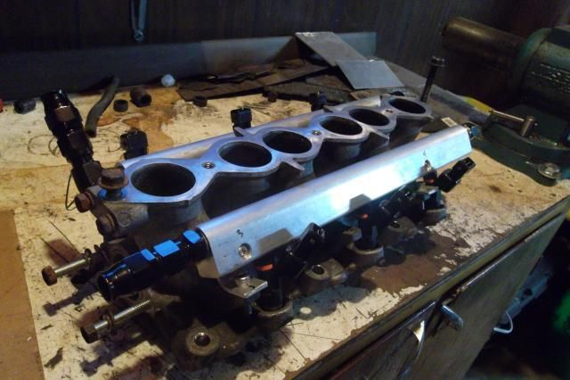
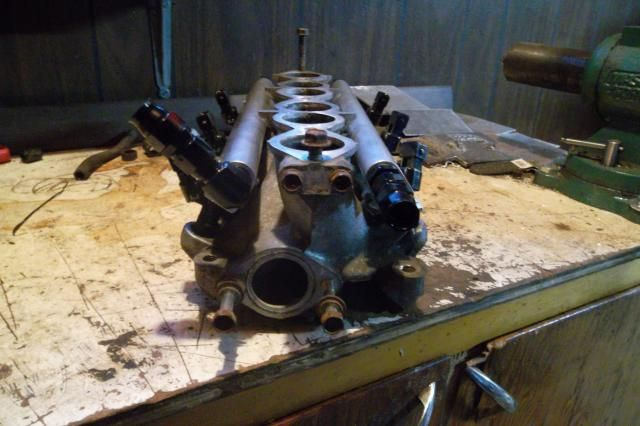
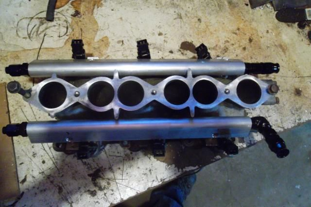1985 300zx N/A - June 4 2012 Sold to Austin Irwin
1987 2+0 N/A - March 19 2014
1987 2+0 Turbo - May 6 2014 -
looks great! -
Very nice work you did there!85 Z31 6.0 LSX turbo 766whp/792wtq
04 GTO, LS6, big cam, porting, N20… underway for summertime daily driver. -
Originally posted by SATAN View Post
That's nice to hear coming from someone with your experience. Thank you!1985 300zx N/A - June 4 2012 Sold to Austin Irwin
1987 2+0 N/A - March 19 2014
1987 2+0 Turbo - May 6 2014 -
Excellent work!
I went the easy route with the ASCO setup.
Yours looks like it has a much better fitment…with the ASCO setup, I had to file the tabs on the upper and lower intake manifold to get it to fit.
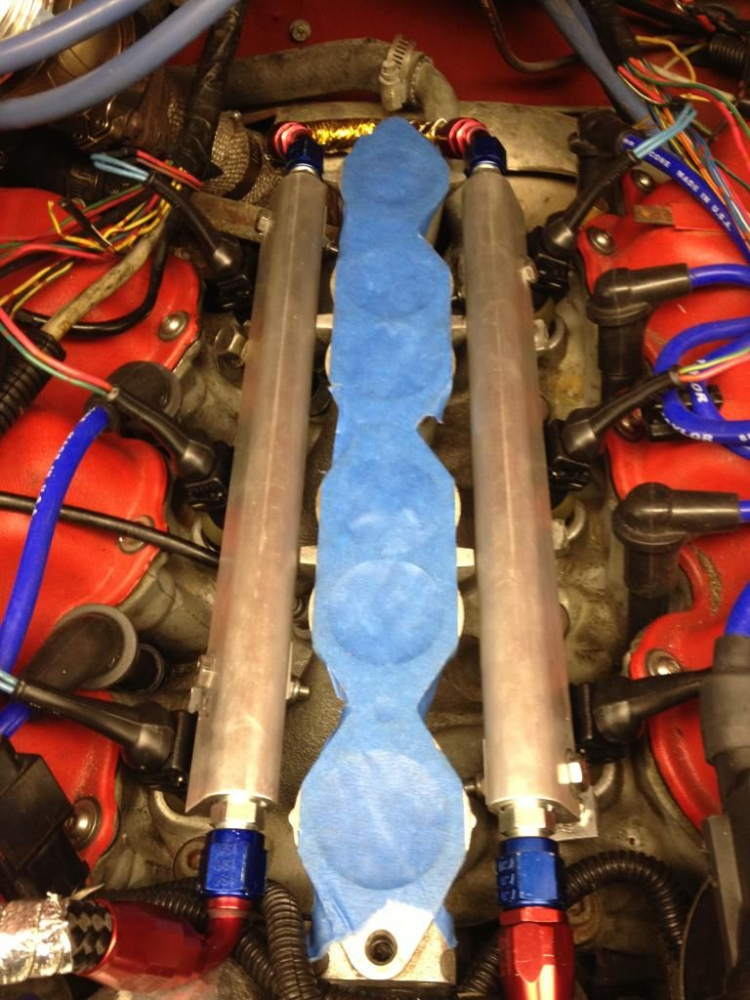
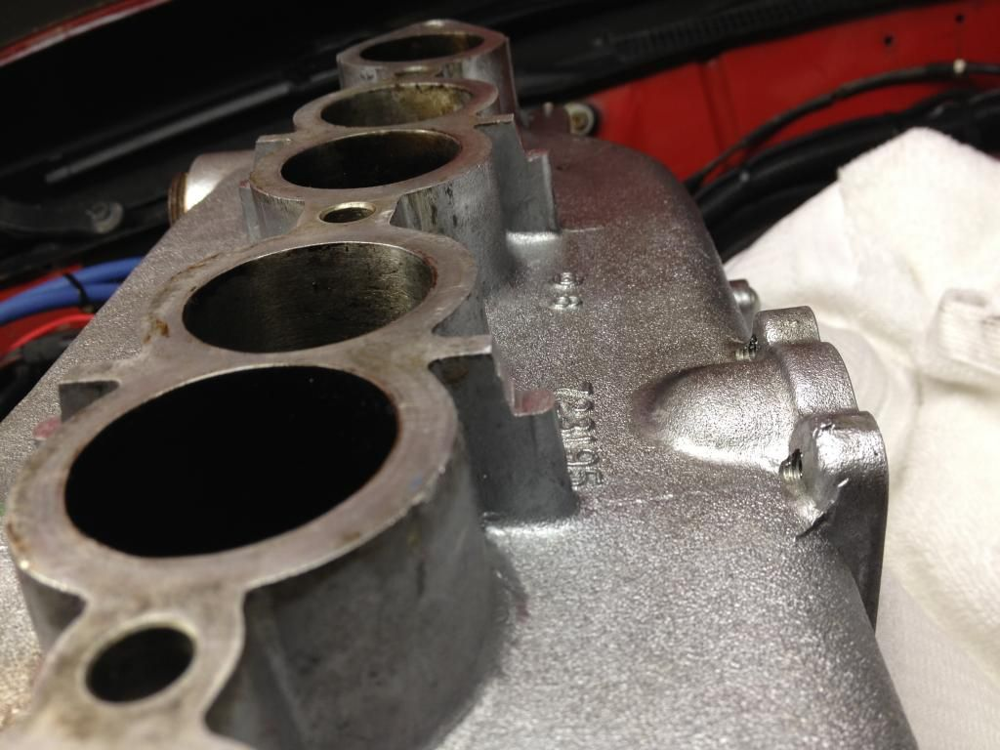 -
Great job,I bought my rails straight from pallnet him self,actually they wer the second one ever made back in 2011 or 12,14mm Great guy to deal with.

Copyright © 2006–. All rights reserved. Privacy Policy